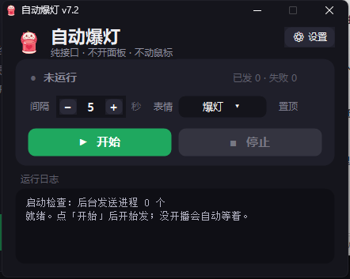

灯
自动爆灯 v7.2
公屏自动刷爆灯 · 挂边上就行
李太阳 ☀ 出品
内置到开播助手旁边，不影响你打字，鼠标键盘还是你的。设好间隔点开始，从开局刷到收工，你自己该聊什么聊什么。

主界面：设间隔、选表情，一个开始一个停止
怎么用
- 打开软件，右上角 ⚙ 设置 里输卡密激活，激活后自动绑这台电脑。
- 间隔填几秒一条。默认 5 秒，太快容易被平台限频，建议 5~10 秒。
- 表情下拉里选要刷的，一般就是「爆灯」。
- 点 ▶ 开始。没开播它会自己等着，你开播了它就自动开始发。
- 点右上角最小化，会缩成一条贴在助手旁边的小条，双击就能展开。
几个你会用到的
- 顶部 已发 N / 失败 N 是实时数字，失败多了就是被限频了。
- 失败变多 → 把间隔调大一点，别硬刚。
- 勾上 置顶，窗口会一直压在最前面，不会被助手盖住。
- 下面那块是运行日志，出了什么事这里都写着。
- 卡密是爆灯专用的，作业助手和欢迎机器人的卡不能通用。
三个软件可以同时开
作业助手、自动爆灯、欢迎机器人 互不冲突，可以一起运行。三个同时挂着也没问题，各干各的。
首次启动会重启你的开播助手
点「开始」时如果检测不到调试口，软件会自动关掉开播助手、带调试口重新打开。这期间不要手动去点开播助手，等它自己起来。
重启会断开当前直播，开播要重新点一次。
首次启动慢是正常的
第一次要连调试口、初始化组件，等 10~30 秒都属于正常。别以为卡死了去反复点，第二次以后就快了。
免责声明：本软件仅供个人娱乐、学习交流使用，禁止任何商业用途、禁止转卖倒卖。
使用前请自行了解并遵守所在平台规则，因使用本软件产生的任何后果由使用者自行承担。
李太阳 ☀ · 语音厅工具站